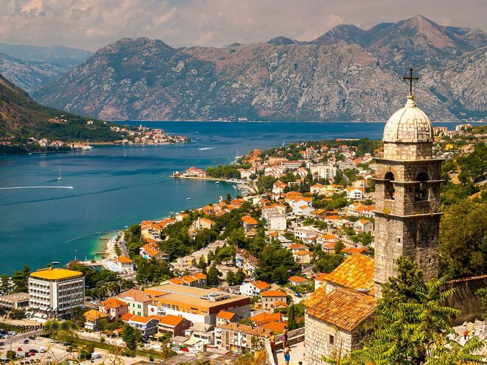

Podgorica es la capital política de Montenegro y su ciudad más grande, con unos 150.000 habitantes en el núcleo urbano. Su nombre significa “bajo la colina”, por la pequeña colina de Gorica. Está en una llanura entre los ríos Morača y Ribnica, a unos 60 kilómetros de la costa, y tiene veranos muy calurosos. Cerca se encuentran las ruinas de la antigua ciudad romana de Doclea. Perteneció al Imperio otomano durante siglos y se unió a Montenegro en 1878. Fue muy bombardeada en la Segunda Guerra Mundial, por lo que conserva poco patrimonio antiguo, y de esa época proviene gran parte de su aspecto moderno y funcional. Entre 1946 y 1992 se llamó Titogrado, en honor a Tito. Del legado otomano quedan la torre del reloj y el barrio de Stara Varoš, con sus callejuelas y mezquitas. Entre sus puntos más reconocibles están el puente del Milenio sobre el Morača, un puente atirantado muy fotografiado, y el gran templo ortodoxo de la Resurrección de Cristo, terminado en 2013. Es el centro administrativo y económico del país, con la sede del gobierno, la universidad y la mayoría de las empresas. No es un gran destino turístico, pero sirve de base para visitar el lago Skadar, el cañón del Morača o la costa. Cetinje, a menos de una hora, conserva el título de capital histórica y cultural.
